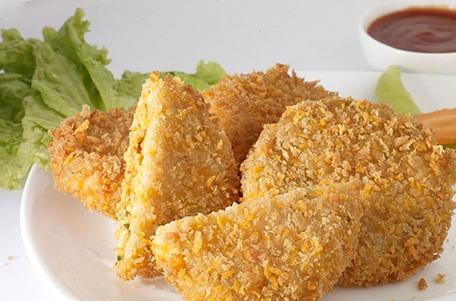

Fish Cutlets
Potato, green chilli and breadcrumb

Suggested cut — Frozen Fillet →Boneless
Method
- Boil or steam the Fish-N-Fish Basa fillets till tender.
- Mash the fish with grated potatoes. Mix well with finely chopped onion, garlic, green chillies, coriander leaves and salt.
- Make small balls. Take each ball, keep it in the palm and press lightly to make an oval-shaped cutlet.
- Dip each cutlet in egg white and roll it in the bread crumbs.
- In a flat pan, shallow fry all the cutlets till they are golden brown.